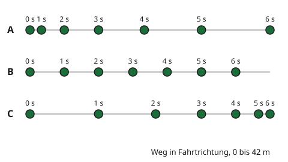

Schneller, langsamer, andere Richtung
Mit einem KI-Tutor lernen
Ein KI-Tutor erklärt dir diese Seite und hilft dir bei den Übungen. Wähl deinen Assistenten:
Mit Claude öffnen Mit ChatGPT öffnen Mit Mistral Vibe öffnen
Du nutzt dein eigenes Konto beim Anbieter. Der Assistent ist kein Angebot von lernapps.net: lernapps liefert nur Inhalte und Übungen. Die Wahl gilt für alle Seiten, nur auf diesem Gerät.
Einstieg - Rad an der Ampel
Ein Rad steht an der roten Ampel. Es wird grün, und du trittst an. Dann rollst du aus und bremst vor der nächsten Ampel. An der Kreuzung biegst du ab. In dieser Fahrt ändert sich dein Tempo oft, und auch die Richtung.
Du weißt aus Klasse 7, wie man die Geschwindigkeit berechnet: . Hier lernst du, wie man beschreibt, wie sie sich ändert.
Anschaulich erklärt - der Bewegungsstreifen
Eine Kamera hat drei Räder auf gerader Strecke jede Sekunde fotografiert. Auf dem Bild siehst du, wo jedes Rad nach 0, 1, 2 ... 6 Sekunden war. Die Punkte sind die Orte, und die Zahl über dem Punkt ist die Zeit. Der Abstand zwischen zwei Punkten ist der Weg in einer Sekunde. Mit und ist dieser Abstand zugleich das Tempo in dieser Sekunde.

Drei Räder, alle Sekunden fotografiert. Vergleiche die Abstände in jeder Reihe.
Quelle: eigene Zeichnung. Lizenz: CC-BY-4.0.| Rad | 1. Sekunde | 2. Sekunde | 3. Sekunde | 4. Sekunde | 5. Sekunde | 6. Sekunde |
|---|---|---|---|---|---|---|
| A | 2 | 4 | 6 | 8 | 10 | 12 |
| B | 6 | 6 | 6 | 6 | 6 | 6 |
| C | 12 | 10 | 8 | 6 | 4 | 2 |
Bei Rad A wachsen die Abstände von Sekunde zu Sekunde: Das Tempo steigt. Rad A beschleunigt. Bei Rad B sind alle Abstände gleich: Das Tempo bleibt gleich. Bei Rad C werden die Abstände kleiner: Das Tempo sinkt. Rad C bremst ab.
- beschleunigen
Ein Körper beschleunigt, wenn seine Geschwindigkeit größer wird.
- abbremsen
Ein Körper bremst ab, wenn seine Geschwindigkeit kleiner wird.
Bremsen ist nicht "negativ"
Wer bremst, hat ein kleineres Tempo, aber nicht ein negatives. Ein Auto, das bremst und anhält, fährt langsamer und langsamer bis 0 m/s. Die Zahl wird kleiner, nicht kleiner als null.
Es gibt eine dritte Art, die Geschwindigkeit zu ändern: die Richtung. Die Geschwindigkeit sagt, wie schnell du bist und in welche Richtung du fährst. Wenn du eine Kurve fährst, ändert sich die Richtung ständig. Deine Geschwindigkeit ändert sich also, auch wenn der Tacho immer dieselbe Zahl zeigt.
Beispiel - Welche Änderung ist das?
Ein Roller fährt los
Ein Roller hat nach 1, 2 und 3 Sekunden diese Orte: 1 m, 4 m, 9 m. Die Abstände sind 1 m, 3 m und 5 m. Sie werden größer, also wird der Roller schneller: Er beschleunigt. Dass die Abstände jede Sekunde um 2 m wachsen, zeigt, dass sein Tempo gleichmäßig steigt.
Übung
Übung
Lösung
Richtige Antwort: Ein Auto fährt an der grünen Ampel los. – Sie wird größer.; Ein Rad rollt auf die rote Ampel zu und hält an. – Sie wird kleiner.; Ein Auto fährt mit gleichem Tempo durch eine Kurve. – Die Richtung ändert sich.; Ein Zug fährt geradeaus mit gleichbleibenden 100 km/h. – Sie bleibt gleich.
Beim Anfahren steigt das Tempo, beim Anhalten sinkt es. In der Kurve ändert sich die Richtung, auch wenn der Tacho gleich bleibt. Nur wer geradeaus mit gleichem Tempo fährt, ändert seine Geschwindigkeit nicht.
Mehr dazu:
Übung
Lösung
Es wird größer.
Dann müssten die Abstände zwischen den Orten wachsen. Hier sind es 8 m, 6 m, 4 m und 2 m: Sie schrumpfen.
Es wird kleiner. richtige Antwort
Die Abstände pro Sekunde sind 8 m, 6 m, 4 m und 2 m. Das Tempo sinkt, der Roller bremst.
Es bleibt gleich.
Bei gleichem Tempo wären alle Abstände gleich groß. Hier ändern sie sich von Sekunde zu Sekunde.
Der Roller fährt zurück.
Der Ort wird immer größer. Der Roller entfernt sich weiter vom Start, er fährt nicht zurück.
Der Abstand pro Sekunde ist das Tempo in dieser Sekunde. Er schrumpft von 8 m auf 2 m, also wird der Roller langsamer.
Mehr dazu:
Übung
Lösung
Richtige Antwort: Die Aussage stimmt nicht.
Das stimmt nicht. Beim Bremsen wird die Geschwindigkeit **kleiner**, bis sie 0 m/s erreicht, wenn das Auto hält. Sie wird dabei nicht negativ. Ein negatives Vorzeichen würde nur anzeigen, dass das Auto in die Gegenrichtung fährt.
Mehr dazu:
Übung
Lösung
Ja, denn seine Richtung ändert sich ständig. richtige Antwort
Die Geschwindigkeit hat einen Betrag (30 km/h) und eine Richtung. Im Kreis dreht sich die Richtung dauernd.
Nein, denn der Tacho zeigt immer dieselbe Zahl.
Der Tacho zeigt nur den Betrag des Tempos. Die Richtung, in die das Auto fährt, zeigt er nicht.
Ja, denn das Auto wird immer schneller.
Der Tacho zeigt 30 km/h, das Tempo ändert sich also nicht. Es ändert sich die Richtung.
Eine Geschwindigkeit besteht aus dem Tempo und der Richtung. Im Kreisverkehr bleibt das Tempo gleich, die Richtung wechselt ständig. Darum ändert sich die Geschwindigkeit.
Mehr dazu: